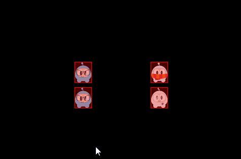
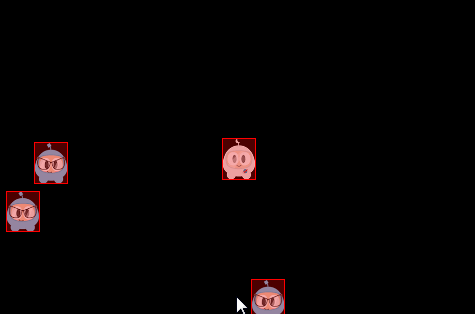

碰撞
你是否看到过车祸？是否跟什么物体相撞过？就像车的相撞一样，刚体对象也可以互相碰撞，当它们互相接触的时候，就认为发生了碰撞。当碰撞发生时，会触发一系列事件，它可以被完全忽略。
碰撞筛选
碰撞筛选允许你启用或者阻止形状之间碰撞的发生，引擎支持使用类型，组位掩码来进行碰撞筛选。
Cocos2d-x 有 32 个支持的碰撞类型，对于每个形状都可以指定其所属的类型。还可以指定有哪些类型可以与这个形状进行碰撞，这些是通过掩码来完成的。例如：
auto sprite1 = addSpriteAtPosition(Vec2(s_centre.x - 150,s_centre.y));
sprite1->getPhysicsBody()->setCategoryBitmask(0x02); // 0010
sprite1->getPhysicsBody()->setCollisionBitmask(0x01); // 0001
sprite1 = addSpriteAtPosition(Vec2(s_centre.x - 150,s_centre.y + 100));
sprite1->getPhysicsBody()->setCategoryBitmask(0x02); // 0010
sprite1->getPhysicsBody()->setCollisionBitmask(0x01); // 0001
auto sprite2 = addSpriteAtPosition(Vec2(s_centre.x + 150,s_centre.y),1);
sprite2->getPhysicsBody()->setCategoryBitmask(0x01); // 0001
sprite2->getPhysicsBody()->setCollisionBitmask(0x02); // 0010
auto sprite3 = addSpriteAtPosition(Vec2(s_centre.x + 150,s_centre.y + 100),2);
sprite3->getPhysicsBody()->setCategoryBitmask(0x03); // 0011
sprite3->getPhysicsBody()->setCollisionBitmask(0x03); // 0011
}
你可以通过检查判断类型和掩码来确定碰撞的发生：
if ((shapeA->getCategoryBitmask() & shapeB->getCollisionBitmask()) == 0
|| (shapeB->getCategoryBitmask() & shapeA->getCollisionBitmask()) == 0)
{
// shapes can't collide
ret = false;
}

碰撞组允许你指定一个完整的组索引，你可以让具有相同组索引的形状总是一直碰撞（正索引）或者一直不碰撞（负索引和零索引）。对于组索引不同的形状。可以根据类型和掩码进行筛选，也就是说，组筛选比类型筛选具有更高的优先级。
连接/关节
回想一下之前提到的术语，关节是把不同刚体连接在一起的一种方式，就好像人体的关节是把人体的不同部位连接在一起。关节连接了不同的刚体，刚体可以是静态的，每一个关节类都是 PhysicsJoint 的子类，你可以通过设置 joint->setCollisionEnable(false) 来避免相互关联的刚体互相碰撞。关节的定义需要你提供一些几何数据，大多关节都是通过锚点来定义的，其余一些关节有各自的定义方式。
PhysicsJointFixed：固定点关节，将两个刚体固定在一个特定的点上。如果要创建一些后续会断裂的复合刚体，使用固定关节是非常合适的。PhysicsJointLimit：限制关节，限制了两个刚体的最大距离，就好像它们被绳子连接了一样。PhysicsJointPin：钉式关节，可以让两个刚体独立的围绕一个锚点进行旋转，就好像被钉在一起了一样。PhysicsJointDistance：固定距离关节，设定了两个刚体间的固定距离。PhysicsJointSpring：弹簧关节，就好像将一个弹簧连接了两个刚体，刚体会互相牵引和弹开。PhysicsJointRotarySpring：弹簧旋转关节，类似弹簧关节，只是两个刚体位置的互相影响变成了旋转的互相影响。PhysicsJointRotaryLimit：限制旋转关节，类似限制关节，只是两个刚体位置的互相影响变成了旋转的互相影响PhysicsJointRatchet：与套筒扳手的工作类似。PhysicsJointGear：传动关节，使一对刚体的角速度比值保持不变。PhysicsJointMotor：马达关节，使一对刚体的相对角速度保持不变。

碰撞检测
碰撞(Contact) 是一种由物理引擎创建的用于管理两个形状碰撞的对象。Contact 对象不是由用户手动创建的，而是自动创建的。这里有两个相关的术语：
- contact point：碰撞点指两个形状相接触的那个点
- contact normal：碰撞法线指从一个形状指向另一个形状的单位矢量
你可以从一个 contact 对象中获取到 PhysicsShape，从而获取到刚体：
bool onContactBegin(PhysicsContact& contact)
{
auto bodyA = contact.getShapeA()->getBody();
auto bodyB = contact.getShapeB()->getBody();
return true;
}
你可以通过碰撞监听器来访问碰撞，碰撞监听器支持四种事件：begin, pre-solve, post-solve, separate。
- begin：收到这个事件时两个形状刚开始接触。在回调函数中返回 true 可以使碰撞继续被处理，若返回 false，则物理引擎会将整个碰撞忽略掉， preSolve() 和 postSolve() 回调函数也会被跳过。不过当两个形状停止重叠时，你仍然可以收到 separate 事件。
- pre-solve：收到这个事件时两个形状接触在一起。如果在回调函数中返回 false，那么物理引擎会忽略掉这次碰撞，如果返回 true，碰撞会继续被处理。此外，你可以使用 setRestitution()，setFriction() 或 setSurfaceVelocity() 方法设置自定义的恢复系数，摩擦，表面速度，从而覆盖默认的碰撞属性。
- post-solve：收到这个事件时两个形状已经接触，并且它们的碰撞已被处理。
- separate：收到这个事件时两个形状刚刚停止了接触。
你还可以使用 EventListenerPhysicsContactWithBodies,
EventListenerPhysicsContactWithShapes, EventListenerPhysicsContactWithGroup 来监听你感兴趣的刚体，形状，组的一些事件。额外的，还需要设置与物理碰撞相关的掩码。注意：默认情况下单单创建事件监听器，是收不到碰撞事件的。
示例：
bool init()
{
//create a static PhysicsBody
auto sprite = addSpriteAtPosition(s_centre,1);
sprite->setTag(10);
sprite->getPhysicsBody()->setContactTestBitmask(0xFFFFFFFF);
sprite->getPhysicsBody()->setDynamic(false);
//adds contact event listener
auto contactListener = EventListenerPhysicsContact::create();
contactListener->onContactBegin = CC_CALLBACK_1(PhysicsDemoCollisionProcessing::onContactBegin, this);
_eventDispatcher->addEventListenerWithSceneGraphPriority(contactListener, this);
schedule(CC_SCHEDULE_SELECTOR(PhysicsDemoCollisionProcessing::tick), 0.3f);
return true;
return false;
}
void tick(float dt)
{
auto sprite1 = addSpriteAtPosition(Vec2(s_centre.x + cocos2d::random(-300,300),
s_centre.y + cocos2d::random(-300,300)));
auto physicsBody = sprite1->getPhysicsBody();
physicsBody->setVelocity(Vec2(cocos2d::random(-500,500),cocos2d::random(-500,500)));
physicsBody->setContactTestBitmask(0xFFFFFFFF);
}
bool onContactBegin(PhysicsContact& contact)
{
auto nodeA = contact.getShapeA()->getBody()->getNode();
auto nodeB = contact.getShapeB()->getBody()->getNode();
if (nodeA && nodeB)
{
if (nodeA->getTag() == 10)
{
nodeB->removeFromParentAndCleanup(true);
}
else if (nodeB->getTag() == 10)
{
nodeA->removeFromParentAndCleanup(true);
}
}
//bodies can collide
return true;
}
